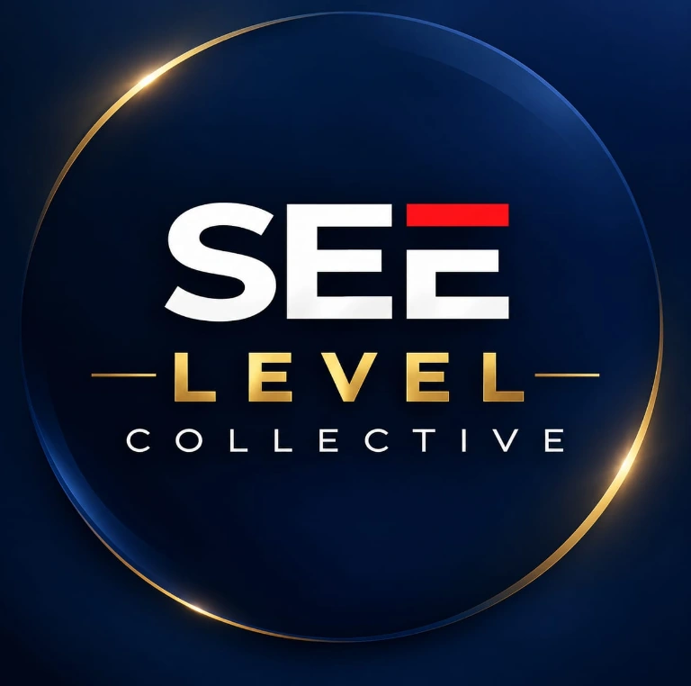
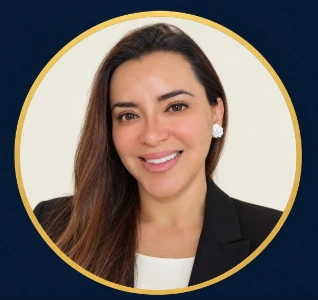

01 / 06↗
Escuelas
Empresariales
Programas de formación ejecutiva a la medida para los niveles estratégico, táctico, comercial y operativo.
Conocer másEstrategia, consultoría y talento para transformar organizaciones, desarrollar líderes y convertir los grandes desafíos en resultados medibles.

Somos un Hub de consultores y facilitadores expertos, nacionales e internacionales, que conecta estrategia, personas y ejecución.
Diseñamos soluciones de arquitectura organizacional, escuelas ejecutivas multinivel, consultoría gerencial y cooperación estratégica enfocadas en la productividad operativa y el retorno de inversión (ROI).
“Las organizaciones del futuro no se construirán con más control; se construirán con más conciencia, coherencia y capacidad de articulación.”
Dirección estratégica, visión multisectorial y una red global de más de 100 facilitadores y consultores para fortalecer la toma de decisiones directivas.
Seis frentes que operan como un sistema integrado. Cada intervención combina estrategia, personas y ejecución para resolver desafíos empresariales complejos.
Programas de formación ejecutiva a la medida para los niveles estratégico, táctico, comercial y operativo.
Conocer másSubsistemas de talento humano, analítica de personas, neuroliderazgo, PNL y transformación cultural.
Conocer másVentas B2B, marketing estratégico y experiencia de servicio bajo modelos de referencia internacional.
Conocer másModelamiento estratégico y optimización de estructuras, roles y procesos.
Conocer másLEGO® Serious Play®, Método del Caso (Harvard) y modelos de excelencia en servicio (Disney).
Conocer másDiseño de iniciativas, cooperación internacional y alianzas estratégicas para la productividad.
Conocer másConsultoría gerencial, procesos y cultura organizacional. Intervenciones especializadas para optimizar la arquitectura organizacional, alinear la cultura corporativa y potenciar integralmente el talento humano.
Estrategia, cambio y efectividad de las personas.
Liderazgo de transformaciones corporativas.
Alineación de comportamientos y clima.
Optimización del ciclo de vida del talento.
Diagnóstico, arquitectura y ejecución como pilares de transformación sostenible.
Solicitar una consultoríaDiseño estructural, modelamiento de procesos estratégicos y alineación de roles orientados a la ejecución.
Diagnóstico y transformación cultural para alinear los comportamientos directivos con el propósito de la empresa.
Modelos por competencias, evaluación del desempeño, compensaciones y gestión predictiva del talento.
Diagnóstico con herramientas propias e intervenciones para reducir la rotación, elevar el compromiso y fortalecer el liderazgo en todos los niveles.
Formación ejecutiva empresarial In-Company: programas a la medida de los niveles estratégico, táctico, comercial y operativo, que transforman la teoría en competencias de alto rendimiento y retorno de inversión.
Vivimos la experiencia en talleres gamificados.
Analizamos y reflexionamos sobre el problema.
Construimos conocimiento práctico para la solución.
Aplicamos y generamos resultados medibles.
Programas prácticos para alinear la mentalidad directiva, la PNL aplicada a la influencia y el desarrollo de culturas de alto rendimiento.
LIDERAZGO / EQUIPOSVenta consultiva (SPIN Selling, Challenger Sale), negociación estratégica y estructuración del embudo comercial.
VENTAS / NEGOCIACIÓNCulturas de servicio memorables, lealtad del cliente y omnicanalidad inspiradas en estándares de clase mundial.
CLIENTES / EXPERIENCIAExecutive Finance para no financieros, tableros de control con Power BI, agilidad e inteligencia artificial aplicada a la gerencia.
DATOS / INNOVACIÓNEscuelas de alta dirección, gestión por procesos y formación aplicada a los retos del sector, respaldadas por la experiencia directa de nuestro equipo en el sistema cooperativo y financiero.
Marcos de referencia global y aprendizaje experiencial de alto impacto, para convertir el conocimiento en comportamientos observables en el puesto de trabajo.
Ideación, alineación estratégica e innovación mediante facilitación con esta metodología.
Análisis de escenarios empresariales complejos y toma de decisiones gerenciales bajo presión, bajo el enfoque popularizado por Harvard.
Arquitectura de experiencias memorables y estandarización de puntos de contacto, con inspiración en el modelo Disney.
Acompañamiento individual y de equipos para desbloquear el potencial directivo y optimizar la comunicación.
Estímulo del compromiso y transferencia directa de los aprendizajes al puesto de trabajo.
Experiencias inmersivas para fortalecer la confianza, romper silos y unificar el propósito de equipos de alto rendimiento.
Convenciones, paneles y encuentros gerenciales respaldados por nuestra red de expertos nacionales e internacionales.
LEGO® y SERIOUS PLAY® son marcas registradas de The LEGO Group. Las demás referencias metodológicas se citan como enfoques de trabajo y no implican afiliación, certificación ni representación oficial de sus titulares.
Proyectos de cooperación y productividad. Convertimos el propósito corporativo en impacto medible con una metodología rigurosa enfocada en empleabilidad, emprendimiento y escalabilidad empresarial.
Prioridades, actores y hoja de ruta.
Integración de las dimensiones social, emocional y ética.
Acompañamiento, seguimiento y medición del impacto.
Estos proyectos fueron diseñados o dirigidos por miembros del equipo en su trayectoria profesional previa, en alianza con los organismos indicados. Su mención describe experiencia individual y no implica representación, patrocinio ni aval institucional actual.
Un Hub liderado por profesionales de trayectoria nacional e internacional, que conecta la alta gerencia con soluciones de desarrollo directivo y transformación empresarial.
Experto en la creación de programas de formación ejecutiva para niveles estratégico, táctico, comercial y operativo; con una década dirigiendo una escuela de negocios empresarial. Ha dirigido proyectos de cooperación internacional en empleabilidad, emprendimiento e inclusión que beneficiaron a más de 35.000 personas. Articula el Hub conectando a la alta gerencia con soluciones de desarrollo directivo.
CHIEF ECOSYSTEM ARCHITECT
ESTRATEGIA E INNOVACIÓNLíder estratégica con más de 10 años de experiencia en gestión empresarial, dirección de operaciones, innovación y transformación organizacional. Especialista en planificación estratégica, gestión del cambio, liderazgo y mejora continua. Su trayectoria integra la psicología, las neurociencias aplicadas, la ética corporativa, la responsabilidad social y la sostenibilidad. Impulsa la transformación digital, la adopción de inteligencia artificial y el desarrollo del talento humano, promoviendo organizaciones innovadoras, competitivas y sostenibles.
Consultor internacional en arquitectura organizacional, gestión por procesos y subsistemas de talento humano, con experiencia en los sectores cooperativo y financiero. Especialista en neuroliderazgo, PNL y transformación cultural; coach internacional certificado. Autor de Neurolíder. El Encantador de Mentes, Métodos y estrategias de motivación laboral y Liderazgo, la espada de un argumento; creador de tres herramientas propias de diagnóstico de clima organizacional.
Experta en rentabilidad corporativa, estrategias comerciales avanzadas, aceleración de ventas B2B, marketing estratégico y transformación de la Experiencia del Cliente (CX). Lidera la optimización del embudo de conversión y la omnicanalidad. Su trayectoria directiva incluye Telefónica, Banco Pichincha, Banco Solidario, Cooperativa Alianza del Valle y AppVialtech.
Más de 100 expertos conectados para abordar desafíos de distintos sectores y escalas organizacionales.
Cifras acumuladas de la trayectoria profesional de nuestros socios y de la red de expertos del Hub.
Años de trayectoria combinada
Países con presencia regional
Expertos en la red interdisciplinaria
Personas capacitadas
Consultorías gerenciales ejecutadas
Organizaciones y proyectos de alcance acumulado
Conversemos sobre el próximo reto de su organización. Desde un diagnóstico inicial hasta programas a la medida y consultoría ejecutiva, estamos listos para escuchar.
Complete estos datos y abriremos WhatsApp con su mensaje listo para enviar.